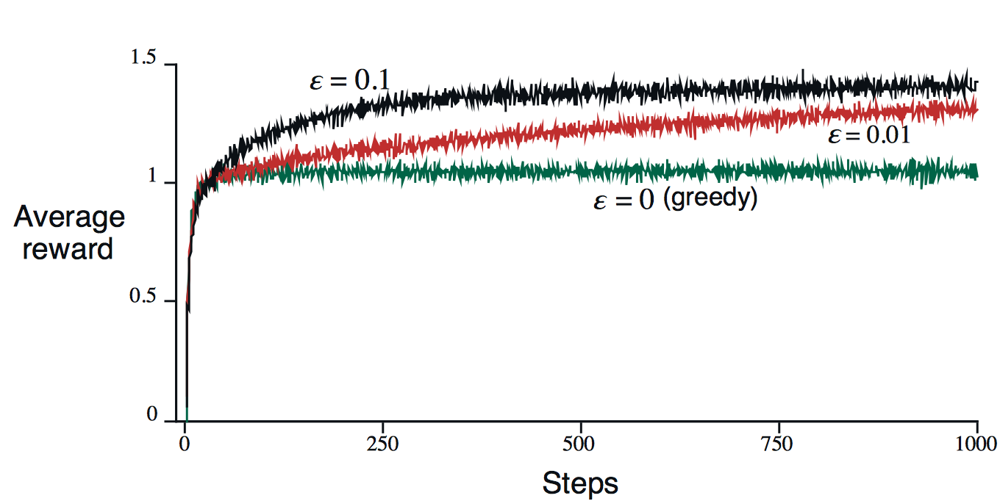
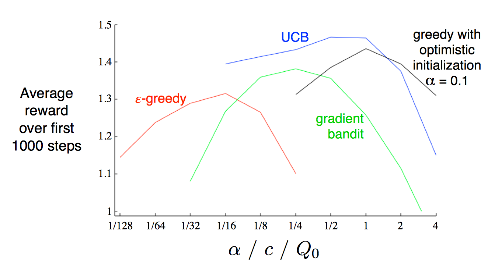

最近尝试着入门强化学习，原因有二：一是自之前在Andrew的访谈视频中了解到强化学习，似乎这是最贴近人类学习方法的算法，于是十分感兴趣。二是想看一看这是否是一个值得自己选为未来方向的课题。
本文从强化学习的概念出发，到过去几十年常用的算法如Q-learning，再到目前的各种应用，主要目的是为了形成一个对强化学习的认识。主要的参考资料是《Reinforcement Learning: An Introduction》。
目前对基于值函数以及基于策略的两种算法我还不是很清楚；但是在RL教材中看到了policy iteration & value iteration，并且它们分别在model-based & model-free两个分类下，目前就先看着吧。
目前给定的三个方向
流量识别(traffic classification)：使用不同的模型，根据在流量中观测到的不同特征以及自己的目标，进行分类[1]。目前针对该问题使用的主流算法有：K-means, AutoClass, SVM(支持向量机)等。
根据目标不同，分类结果随之改变。如可以按照应用类别将流量分类为(HTTP, FTP, WWW, DNS, P2P)；按具体应用将流量分类为(Skype, YouTuBe, Netflix)。
通常，网络流量分类方法可以分为四大类，利用端口号、分组有效载荷、主机行为或流特征进行分类。
路径规划(route planning)：为分组的传输寻找到一条适合的路线。根据运营政策以及自己的目标不同，评判标准也不一致：最小化代价、最大化链路利用率、服务质量(Qos)的保证等。
路径规划在ML领域是一个具有挑战性的难题，因为需要应对动态变化的复杂拓扑网络、学习选定的路径与服务质量之间的关系、以及预测路径规划带来的结果。目前，强化学习(RL)主导了该领域的研究。
资源分配(resource allocation)：通过管理资源的分配以最大化长期目标，如收益或资源的最大利用率。这里的资源包括CPU、内存、磁盘、交换机、路由器、带宽、AP、广播频道及其频率。
资源分配是从属于资源管理(resource management)问题下的一个子问题，另一个子问题是准入控制(admission control)。
资源分配的主要难题是在面对不可预测性的情况下调整资源以实现长期利益[2]。
基本概念
RL首先是非监督学习，这是因为评估每个行为时使用的是估计(evaluation)，我们只大概清楚采用某个行为的好坏程度，并且不确定这是最好行为还是最坏行为。与之相对，监督学习得到的则是指导性回馈(instrcutive feedback)，我们知道每一步的正确解，并且根据该结果修正参数。
MDP
MDP是DTP(decision-theoretic planning)的一种非常直观并且重要的表现形式。在这个形式下，环境(environment)可以表现为状态以及行为的集合。包含了状态、行为、状态转移、奖励函数。将上述的四个因素结合在一起，便得到了马尔科夫过程，表示为一个元组$<S, A, T, R>$。
states
状态表示描述当前形势的所有必要信息。表示为
$S = {s^1, …,s^N}$其中$N$表示状态的总数。
actions
行为用于控制系统状态。可以表示为${a^1, …,a^K }$。其中$K$表示行为的总数。使用$A(s)$来表示可以作用于状态$s$的行为集合。在某些系统中，不是所有状态都可以执行所有行为。
transition function
状态转移函数定义：$T:S\times A \times S \rightarrow [ 0, 1]$
表示从状态$s$经过行为$a$转移到状态$s’$的概率。规定：
- $1\ge T(s, a, s’) \ge 0$
- $\sum_{s’\in S} T(s, a, s’) = 1$
系统被称为Markovian的，当且仅当系统的状态转移与以前无关，而只与当前的状态以及当前的行为有关。这个在动态规划中可以得到十分形象具体的解释。同时存在着k-Markov的系统，表示下一状态仅与前k个状态相关。
reward function
定义：$R:S \times A \rightarrow \mathbb{R} \text{ or } R:S\times A\times S \rightarrow \mathbb{R}$
表示在某个状态执行某种行为获得的奖励，或者在一个状态通过某种行为到达另一种特定状态带来的奖励。
Policies
给定一个MDP $<S, A, T, R>$ ，一个策略表示的就是该情形下状态到动作的映射。一般情况下遇到的都是确定策略(deterministic policy)，定义为 $\pi : S \rightarrow A$。同时也存在随机性策略(stochastic policy)，定义为$\pi : S \times A \rightarrow [0, 1]$。
策略是代理的一部分，它的目的是控制表现形式为MDP的环境。我对策略的认知是，在经过多次迭代之后，对于每一步，下一步都有一个最优解。当前的状态下一步可以执行的最优动作，也就是所谓策略。在心理学中，有一个很形象的说法 – 本能反应。
Optimality Criteria
在这一部分，量化最优策略。强化学习的目标是为了最大化奖励(rewards)。在MDP中有三种基本的优化目标：
$\displaystyle E \left[ \sum_{t=0}^h r_t \right]$
该目标函数从当前状态出发，考虑了接下来的$h$步决策，可以认为是考虑了局部最优的情况。属于贪心。
$\displaystyle E\left[ \sum_{t=0}^{\infty}\gamma ^t r_t\right]$
该目标函数从当前状态出发，考虑了之后的所有可能情况，但是其中包含了$\gamma^t$项，表示随着步数的增加，赋予的权值越来越小($\gamma < 1$)。因此该目标函数虽然考虑了全局的情况，但是近期的优先级高于未来的优先级。
$\displaystyle \lim_{h\rightarrow\infty}E\left[ \frac{1}{h}\sum_{t=0}^h r_t\right]$
该目标函数从当前状态出发，同样考虑了将来的所有情况，并且对每一步的优先级都平等对待。
从井字棋认识强化学习
这里讨论的问题不是博弈论中假定每个选手都采取最优策略：在这里对手不一定采取最优策略，只是一个普通人。
动态规划就没有办法解决该类问题。在平常的问题中，必定是清楚对手在某环境中下一步的发展方法的，一般是以概率的形式来表达。因为不清楚对手在某环境下的行为，所以就没有办法预测下一步自己应该朝什么方向发展。
对于遗传算法，它将会直接寻找当前环境的最优策略。这里的策略指在每一个状态下应该采取什么行为可以使得获胜的概率最大。对于每一个策略，在经过多场游戏之后获得一个获胜概率。之后算法将会依据该概率调整策略，以期获得最优策略。相当于是在策略空间中不断地向上爬寻找最优解。
在强化学习中，我们将会设置一个表，该表中的每个元素表示可能到达的状态，上面的数值表示处于该状态获胜的概率。初始化将所有获胜状态设置为1，失败状态设置为0，其它状态设置为0.5。之后通过与对手玩游戏来更新这个表格，每次将会选择该状态下的最优行为。有时不会选择最优行为，目的是去探索查看是否可能在其它行为中产生更优状态。
这里可以对比一下遗传算法与强化学习：前者是累积更新，也就是通过多局游戏的结果来更新参数，并且该学习过程在最后的结果中没有反应。最终只是使用最后的结果；后者则将会对每个行为进行估计。强化学习相对于遗传算法，能够利用更多的信息。
多臂赌博机问题
问题引入
现在有多台老虎机，并且每台老虎机都有一个固定的中奖率，各不相同。我们可以在这些老虎机中重复多次选择出一个，查看收益。目标最大化长期收益。
这是一个十分典型的问题，并且可以延伸出来很多其它问题：
- 假设一个用户对不同类别的内容感兴趣程度不同，那么我们的推荐系统初次见到这个用户时，怎么快速地知道他对每类内容的感兴趣程度？这就是推荐系统的冷启动。
- 假设我们有若干广告库存，怎么知道该给每个用户展示哪个广告，从而获得最大的点击收益？是每次都挑效果最好那个么？那么新广告如何才有出头之日？
- 我们的算法工程师又想出了新的模型，有没有比A/B test更快的方法知道它和旧模型相比谁更靠谱？[3]
等等等等
在这个简化过的多臂赌博机问题中，假定每个行为都有着固定的，或者称之为期望的收益，标记为value。如果已知最大收益的行为，那么一定会选择该行为。目前的问题就是，不清楚最大期望收益行为。
在局部情景下，有两个需要取舍的行为：exploiting & exploring(EE)。在任何情况下，一定有一个目前已知的收益最大的行为，如果持续选择该行为，那么称之为exploiting，可以理解为持续利用已知信息最大化收益。如果不选择目前已知的最大收益行为，而试图去估计其它行为，查看是否可以产生收益更大的行为以对长期收益作出贡献，那么称之为exploring。
下面将会呈现几个简单的解决EE问题的权衡算法。
Action-Value Method
定义某个行为$a$的真实期望收益为$q(a)$，在时间$t$估计的期望收益为$Q_t(a)$。到时间$t$时，设行为$a$被选中的次数为$N_t(a)$，产生了收益$R_1, R_2, …,R_{N_t(a)}$，使用采样平均的方式可以得到行为$a$目前的估计期望收益为
$$
Q_t(a) = \frac{R_1 + R_2 + \dots + R_{N_t(a)}}{N_t(a)}
$$
最简单的行为选择方式为选择当前估计期望收益最高的行为$A_t^$，满足
$$
\begin{equation}\begin{aligned}Q_t(A_t^)& = \max_aQ_t(a) \ A_t&=\mathop{\arg\max}_a Q_t(a)\end{aligned}\end{equation}
$$
在该算法的基础上，添加一个参数$\epsilon$，表示有$\epsilon$的概率无视估计期望收益而随机选择一个行为进行explore，就得到了$\epsilon-greedy$算法。在一个小样本集上进行测试的结果如下所示：

该算法的特点是在试验次数很大的情况下，最终的估计期望行为收益就会收敛到真实期望行为收益。当然，这也只是理论上。
$\epsilon -greedy$与$greedy$算法也有不同的使用场景。如果每个“老虎机”没有偏差而给出的都是固定收益，那么肯定只需要使用$greedy$算法对每个“老虎机”操作一遍即可得到最优行为。如果偏差很大，那么$\epsilon-greedy$算法可以更快地找到最优行为。
My Little Idea
事实上回忆起之前在Coursera上面学过的《Improving Hyperparameter tuning Regularization and Optimization》课程，此处可以使用指数加权平均来代替采样平均估计，以减少方差太大的数据造成的影响，得到更快地收敛速度；同时还可以减少内存的使用。
Incremental Implementation
这个方法通过对采样平均估计公式进行改进，得到了一个减少内存占用的等价公式。实际上与我上面提出的估计方式在内存减少方面达到了一样的效果。
使用$Q_{k}$来表示第$k$次的估计期望收益，那么就有
$$
\begin{equation}\begin{aligned}Q_{k+1}&=\frac{1}{k}\sum_{i=1}^kR_i \ &=\frac{1}{k} \Bigg(R_k + \sum_{i=1}^{k-1}R_i \Bigg) \ &= \frac{1}{k}\Big(R_k + (k - 1)Q_k + Q_k - Q_k\Big) \ &= \frac{1}{k}\Big( R_k + kQ_k - Q_k\Big) \ &=Q_k + \frac{1}{k}\Big[R_k - Q_k \Big]\end{aligned}\end{equation}
$$
Upgrade: Nonstationary Problem
考虑到每个“老虎机”本身的期望收益将会发生变化，那么此时就需要对不同时刻的收益的重要性作出一个权衡：很明显，近期的收益应该重点考虑，过去的收益次之。这里使用下面的公式来表示这个关系：
$$
Q_{k+1} = Q_k + \alpha \Big[R_k - Q_k \Big]
$$
实际上这就是指数加权平均。
$$
Q_{k+1} = (1-\alpha)Q_k + \alpha R_k
$$
对比采样平均与指数加权平均
根据随机逼近理论中的Robins-Monro[4]算法，针对形如上面的式子，当满足以下条件时，经过多次迭代之后的估计值将会收敛到真值：
$$
\sum_{k=1}^\infty\alpha_k(a) = \infty \ \ \ \ \text{and} \ \ \ \ \sum_{k=1}^\infty\alpha_k^2(a) < \infty
$$
当我们使用$\alpha_k(a) = \frac{1}{k}$，也就是采样平均时：对于式子(1)，根据调和级数的收敛性得证。对于式子(2)，根据调和级数的性质得证。因此最终将会得到收敛的结果。
当使用指数加权平均时，此时的$\alpha$为常数，因此第二个式子不成立，导致最终的结果不会收敛。但是在实践中，使用指数加权平均的方法更多一些。这是因为满足RM算法的方法，在实际使用中收敛的速度很慢。尽管后者在理论上不会收敛到真值，但是可以在较短的时间内收敛到一个较优的结果。
Upper-Confidence-Bound Algorithm
上面描述的算法在exploring步骤都只是随机地选择一台“老虎机”，而没有使用历史信息来作出决策。假设每一台老虎机的收益分布不发生变化，那么通过在该“老虎机”上得到的历史信息，根据置信区间就可以得出在一定概率下该“老虎机”可以得到的收益上界。具体的公式为：
$$
A_t = \mathop{\arg\max}_a\Bigg[Q_t(a) + c\sqrt{\frac{\ln t}{N_t(a)}} \ \Bigg]
$$
其中第二项表示的就是可能的伸展上界，第一项表示目前在该“老虎机”上得到的采样平均或指数加权平均。下面进行该公式的推导：
以某一个“老虎机”为例，假设目前已经在其上进行了$N$次操作，得到的观测值分别为$X_1, X_2, …,X_N$，它们独立同分布。令$\mu = E(X), \sigma^2 = E(X - \mu)^2, \hat{\mu} = \displaystyle \frac{1}{n}\sum_{i=1}^nX_i$。
构造$\displaystyle S_n = \sum_{=1}^n(X_i - \mu)$，由中心极限定理可知，$\displaystyle \frac{S_n}{\sqrt{n}}$近似分布于$N(0, \sigma^2)$，当$n\rightarrow\infty$时可以得到：
$$
\begin{equation}
\begin{aligned}
P(\mu \ge \hat{\mu} + \epsilon) &= P(\frac{S_n}{\sqrt n}\le -\epsilon \sqrt n) \
&= P(\frac{S_n}{\sqrt n} \ge \epsilon \sqrt n)
\end{aligned}
\end{equation}
$$
根据$\sigma$ - subgaussian distribution[5]的性质可以得到下式：
$$
P(\mu \ge \hat{\mu} + \epsilon) \le \exp(\frac{-n\epsilon^2}{2})
$$
令$\displaystyle \delta = \exp(\frac{-n\epsilon^2}{2})$，可以得到$\displaystyle \epsilon = \sqrt{\frac{2}{n}\ln \frac{1}{\delta}}$，代入到原式中有：
$$
P(\mu \ge \hat{\mu} + \sqrt{\frac{2}{n} \ln \frac{1}{\delta}}) \le \sigma
$$
根据置信区间的相关性质，该式表明该“老虎机”的收益上界为$\displaystyle \hat{\mu} +\sqrt{\frac{2}{n} \ln \frac{1}{\delta}} $的置信度为$1 - \sigma$。一般而言，可以设置$\sigma = 1/n$，这样一来就得到了UCB算法的核心公式。
Gradient Bandits
上面描述的所有算法都是估计每个行为的实际价值。这里介绍一种不对绝对价值关心，而关心各个行为之间的相对价值的算法。使用$preference \ \ H_t(a)$来表示对行为的偏好程度，通过soft-max分布，就可以实现只关心相对价值的目标：
$$
\Pr{A_t = a} = \frac{e^{H_t(a)}}{\sum_{b=1}^{n}e^{H_t(b)}} = \pi_t(a)
\tag{1}
$$
使用$\pi_t(a)$表示时刻$t$下采用行为$a$的可能性。初始化将所有的偏好设置为0，这样一来每个行为都有相同被选择的可能性。
该算法使用随机梯度降进行更新，公式为：
$$
\begin{equation}
\begin{aligned}
H_{t+1}(A_t) &= H_t(A_t) + \alpha (R_t - \overline{R}_t)(1-\pi_t(A_t)) \
H_{t+1}(a) &=H_t(a) - \alpha (R_t - \overline{R}_t)\pi_t(a), & \forall a \ne A_t
\end{aligned}
\end{equation}
\tag{2}
$$
其中$A_t$表示时刻$t$选择的行为，$\alpha$为更新步长，$\overline{R}_t \in \mathbb{R}$是目前观测到的收益均值。直观来看，$\overline{R}t $表示baseline，如果当前采取的行为低于该基准线，那么该行为的偏好就会降低，同时其它行为的偏好将会提高；反之同样。下面对该公式进行推导，首先列出针对于$H{t+1}(a)$的梯度更新公式：
$$
H_{t+1}(a) = H_t(a) + \alpha\frac{\partial\mathbb{E}[R_t]}{\partial H_t(a)}
\tag{3}
$$
其中对系统的整体期望的真值可以表示为：
$$
\mathbb{E}[R_t] = \sum_b \pi_t(b)q(b)
$$
下面对式子(3)后一项进行展开：
$$
\begin{equation}
\begin{aligned}
\frac{\partial\mathbb{E}[R_t]}{\partial H_t(a)} &= \frac{\partial}{\partial H_t(a)}\Bigg[\sum_b\pi_t (b)q(b) \Bigg]\
&= \sum_bq(b)\frac{\partial\pi_t(b)}{\partial H_t(a)}
\end{aligned}
\end{equation}
\tag{4}
$$
该项中的真值部分$q(b)$为不可观测值，并且为常数，因此对导数没有影响。将后面一项单独取出进行展开：
$$
\begin{equation}
\begin{aligned}
\frac{\partial \pi_t(b)}{\partial H_t(a)} &= \frac{\partial}{\partial H_t(a)}\pi_t(b)
\ &=\frac{\partial}{\partial H_t(a)}\Bigg[\frac{e^{H_t(b)}}{\sum_{c=1}^n e^{H_t(c)}} \Bigg] \
&= \frac{\frac{\partial e^{H_t(b)}}{\partial H_t(a)}\sum_{c=1}^n e^{H_t(c)}- e^{H_t(b)}\frac{\partial \sum_{c=1}^n H_t(c)}{\partial H_t(a)}}{(\sum_{c=1}^ne^{H_t(c)})^2} \
&= \frac{\mathbb{I}_{a=b} e^{H_t(a)} \sum_{c=1}^n e^{H_t(c)} - e^{H_t(b)}e^{H_t(a)}}{(\sum_{c=1}^ne^{H_t(c)})^2} \
&= \frac{\mathbb{I}_{a=b}e^{H_t(b)}}{\sum_{c=1}^ne^{H_t(c)}} - \frac{e^{H_t(b)}e^{H_t(a)}}{(\sum_{c=1}^ne^{H_t(c)})^2} \
&= \mathbb{I}_{a=b}\pi_t(b) - \pi_t(b) \pi_t(a) \
&= \pi_t(b) (\mathbb{I}_{a=b}-\pi_t(a))
\end{aligned}
\end{equation}
$$
其中$\mathbb{I}_{a=b}$等价于语句a==b的布尔返回值。整体实际上只是一个简单的求导过程。根据最终结果，可以很清楚地发现：
$$
\sum_b \frac{\partial\pi_t(b)}{\partial H_t(a)} = 0
$$
正因如此，对于等式(4)，我们可以做等价变形得到：
$$
\begin{equation}
\begin{aligned}
\frac{\partial\mathbb{E}[R_t]}{\partial H_t(a)}
&= \sum_bq(b)\frac{\partial\pi_t(b)}{\partial H_t(a)} \
&= \sum_b (q(b) - X_t) \frac{\partial\pi_t(b)}{\partial H_t(a)} \
&= \sum_b \pi_t(b)(q(b) - X_t) \frac{\partial\pi_t(b)}{\partial H_t(a)} / \pi_t(b)
\end{aligned}
\end{equation}
$$
其中$X_t$表示一个常数。同时可以发现上式的形式与期望的定义一致，因此有：
$$
\begin{equation}
\begin{aligned}
\frac{\partial\mathbb{E}[R_t]}{\partial H_t(A_t)}
&= \mathbb{E}\Bigg[ (q(A_t) - X_t)\frac{\partial\pi_t(A_t)}{\partial H_t(a)} / \pi_t(A_t)\Bigg] \
&= \mathbb{E}\Bigg[(R_t - \overline{R}_t)\frac{\partial\pi_t(A_t)}{\partial H_t(a)} / \pi_t(A_t) \Bigg] \
&= \mathbb{E}\big[(R_t - \overline{R}_t)\pi_t(A_t)(\mathbb{I}_{a= A_t} - \pi_t(a)) /\pi_t(A_t)\big] \
&= \mathbb{E}\big[(R_t - \overline{R}t)(\mathbb{I}{a=A_t} - \pi_t(a)) \big]
\end{aligned}
\end{equation}
$$
其中使用$R_t$来代替$q(A_t)$，这是因为$\mathbb{E}[R_t] = q(A_t)$；使用$X_t = \overline{R}t$。通过将该式的观测值代入到式子(3)中，就可以得到该算法的核心公式：
$$
\begin{equation}
\begin{aligned}
H{t+1}(a) &= H_t(a) + \alpha (R_t - \overline{R}t)(\mathbb{I}{a = A_t} - \pi_t(a)), & \forall a
\end{aligned}
\end{equation}
$$
Summary
综上所述，$\epsilon-greedy$算法会在短时内随机选择行为以达成EE平衡；UCB算法将会选择估计收益最大的行为，并且对于试验次数较小的行为有一定的偏好；Gradient-bandit算法不再关注行为价值，而是使用soft-max关注相对的偏好。
